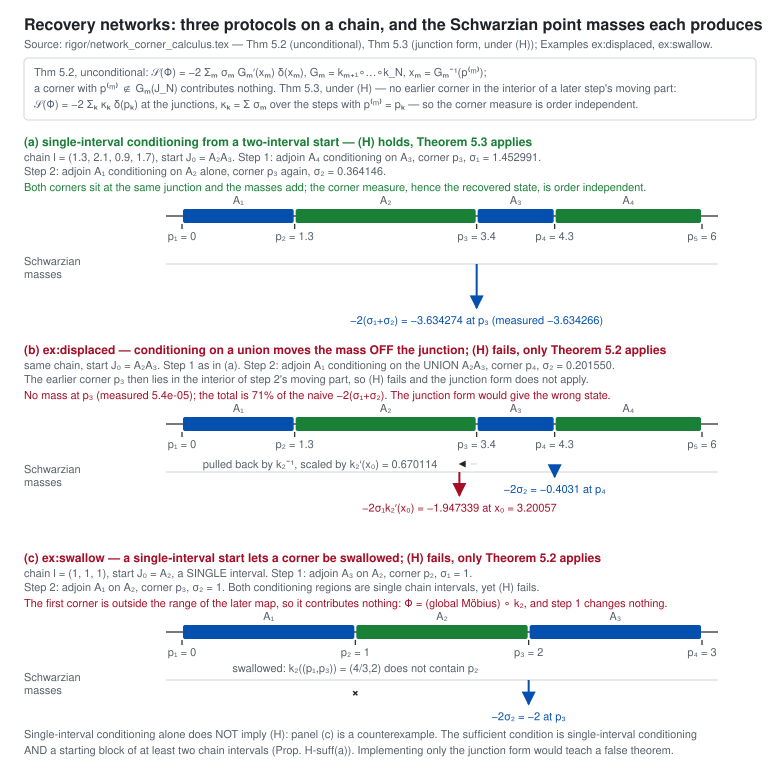

Module 6 — Recovery networks and the holonomy
Recover a long chain one interval at a time. Each step is a parabolic compression toward a corner; the whole protocol composes to a C¹ piecewise-Möbius map, and the recovered state depends on that map only through its Schwarzian, which is a finite sum of point masses. The question this module answers is where those masses sit — which is not always at the junctions.
With Φ = k₁ ∘ ··· ∘ kN (the first step outermost) and Gm := km+1 ∘ ··· ∘ kN, Sch(Φ) = −2 ∑m σm G′m(xm) δxm, xm = Gm−1(p(m)), summed over those m with p(m) in the range of Gm. The mass sits at the preimage of the corner under the later steps and is scaled by their derivative. A corner outside the range of Gm contributes nothing at all. This module always draws this rule.
Where this comes from: claim page · rigor/network_corner_calculus.tex:622 (thm:general) · rigor/g1a_calculus.py · the browser unit tests
(H): no earlier corner lies in the interior of a later step's moving part Mm′ = AB ∪ Anew. Under (H) and only under it, Sch(Φ) = −2 ∑k κk δpk, κk = ∑ σm over the steps whose corner is pk, the masses sit on the junctions, and the order of the steps carries no information.
(H) is tested on the configuration you build, never inferred from the shape of the protocol. It can fail when a step conditions on a union of chain intervals, or when the chain starts from a single interval — but it does not always fail in those shapes: VWZ 1(A) and 1(B) both condition on a union and both satisfy it, 1(B) because its two corners coincide.
Where this comes from: rigor/network_corner_calculus.tex:658 (thm:corner) · :712 (sufficient conditions)
Two maps with the same Schwarzian differ by a global Möbius map without a pole on the open image interval, and the vacuum is Möbius invariant, so they induce the same state. Hence: equal corner measure ⇒ equal recovered state, equal fidelity, equal relative entropy. And since every mass is negative and the last step is never swallowed, a protocol whose last step keeps a non-empty part never recovers the vacuum exactly.
Where this comes from: exact recovery never happens · protocol ordering · corner data for n = 4, 5

The two ways (H) can fail are Examples 5.5 and 5.6 of the rigor document: a mass that moves off its junction to its preimage under the later steps, and a corner that a later step swallows so that it contributes nothing. Both are reproduced, with the document's own numbers, in the unit tests.
The chain and its image
The Schwarzian masses
The steps, and Theorem 5.2 applied to each
| m | conditions on | adjoins | σm | corner p(m) | xm | G′m(xm) | mass |
|---|
Protocol 3: the same fidelity, a different point map
Both steps compress toward the same corner p₃, one from the left and one from the right. They commute, so the two orders give literally the same point map, and its Schwarzian is a single mass −2(σ₁+σ₂).
The point maps are not equal. Φ(3) = M ∘ Rp₃, σ₁+σ₂ with M a global Möbius map: the over-compressed Theorem-A step agrees with Protocol 3 only up to post-composition with it. That is exactly why the two agree as fidelities — the vacuum does not see a global Möbius map — and differ as point maps.
Where this comes from: rigor/network_corner_calculus.tex:1219 (thm:prot3) · claim page
The two ways (H) fails
Choose either example in the protocol menu to see it built. Both are taken from the rigor document, and the numbers the document prints are shown beside the ones your browser computes.
- Displaced (Example 5.5): a later step conditions on a union, its moving part swallows an earlier corner's neighbourhood, and the earlier mass moves to xm = Gm−1(p(m)) and is rescaled by G′m(xm) < 1. The total mass is smaller than the naive corner measure — in the document's configuration, 71% of it.
- Swallowed (Example 5.6): the chain starts from a single interval, so the first step is degenerate and its corner is the far end of the block. The second step's image does not contain that corner at all, so the first step contributes nothing: the whole of it is undone by a global Möbius map and leaves the recovered state unchanged. Both conditioning regions here are single chain intervals, which is why single-interval conditioning alone does not imply (H).